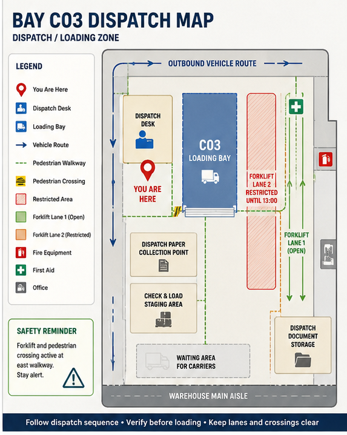

Current Instruction
Confirm BayYou are at Bay C03 dispatch point. Confirm the bay is correct before loading continues. Wait for marshal or supervisor confirmation if the loading route is unclear.
Hold / Strata Logistics / LOG-C03
Dispatch Point · Role-Aware Operational QR
Dispatch ActiveDispatch routing, Bay A12 overlap and Hold Area B movement context for the current scan point.

You are at Bay C03 dispatch point. Confirm the bay is correct before loading continues. Wait for marshal or supervisor confirmation if the loading route is unclear.
Forklift crossing and outbound vehicle movement may be active near this bay. Wear required PPE and keep the emergency route clear.
Mixed dispatch movement is currently active near the Bay C03 loading route. Additional pallet movement may occur during this dispatch window.
If site conditions, routing or instructions do not match the current scan view, report before continuing.
Current dispatch continuity depends on clear route access between Bay C03, Bay A12 and Hold Area B.
Confirm pallet count, vehicle registration, paperwork match and loading area condition before release.
Shared-use equipment and operator handover should remain visible while this dispatch movement is active.
If damage, mismatch, delay or unsafe movement is identified, pause loading and raise an operational exception.
Unverified, damaged or unclear loads should remain visible within Hold until an operational decision is confirmed.
This view shows whether dispatch checks, exceptions and route restrictions are being recorded at the point of work.
Show any active mismatch, damage, obstruction, delayed dispatch or unresolved supervisor action.
Hold supports evidence of process, not just completion of the task.
Keep an "Other issue" action available so staff can report what the system did not predict.
Obstruction report attached to Bay C03. Keep the route clear and wait for marshal or supervisor confirmation before continuing.
Mismatch recorded against the scan point so dispatch reference, physical bay and supervisor review stay connected.
Supervisor request raised with current Bay C03 role view and routing context attached.
Record a condition or instruction that does not match the expected Bay C03 dispatch view.
Loading pause opened for Bay C03. Confirm route condition, pallet state and dispatch paperwork before release resumes.
Hold Area B movement prepared. Keep load identity and route access visible until the transfer is confirmed.
Forklift support requested with Bay C03 route, shared-use equipment and current dispatch movement attached.
Pallet issue escalated for supervisor review. Keep affected stock visible and do not release until the decision is recorded.
Supervisor release confirmation prepared with Bay C03 checks, route status and dispatch continuity context attached.
Open Bay C03 exceptions include mismatch, obstruction, delayed dispatch and unresolved supervisor action states.
Audit review connects scan role, selected action, dispatch status and exception handling evidence.
Overdue review highlights dispatch checks that remain unresolved beyond the current operational window.
Continuity view keeps Bay C03, Bay A12 and Hold Area B dependencies visible until the dispatch decision is complete.
Capture governance context that is outside the standard exception set but may affect confidence in the record.